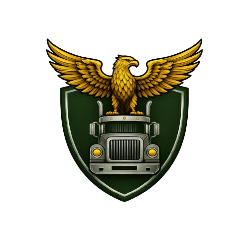
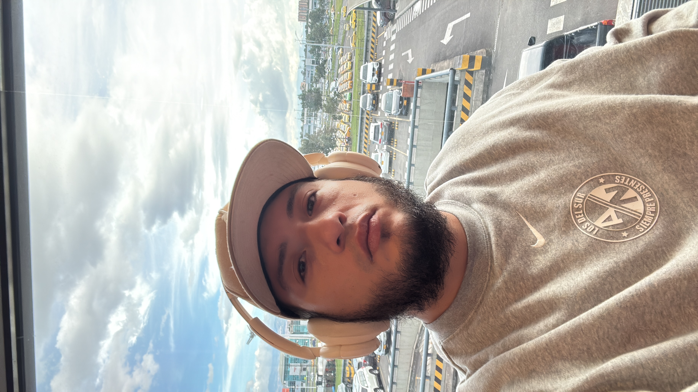
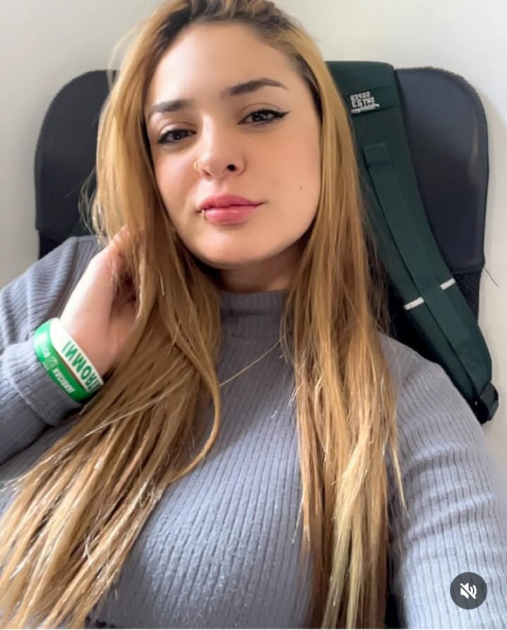

De Medellín a Estados Unidos. De la calle a construir un ecosistema binacional que ya genera tracción en seguros y tecnología lista para lanzar.

Fundador & CEO
Habilidades: Construcción de departamentos desde cero, procesos de alto control, arquitectura de negocios.
Valores: Ejecución sin excusas, disciplina, transparencia.
Roles: CEO, closer, formador, creador de sistemas.
Puede enseñarte: Cómo estructurar un negocio de alto rendimiento y procesos de control de calidad.

Fundadora & COO
Habilidades: Underwriting, búsqueda de cargas, creación de herramientas tecnológicas.
Valores: Disciplina, atención al detalle, resiliencia.
Roles: COO, underwriter, operadora diaria.
Puede enseñarte: Cómo operar un negocio de trucking con excelencia y estructurar procesos de calidad.
Ofrecemos mentorías de arquitectura de negocios, construcción de departamentos y procesos de alto control de calidad.
Reservar mentoría ahora →